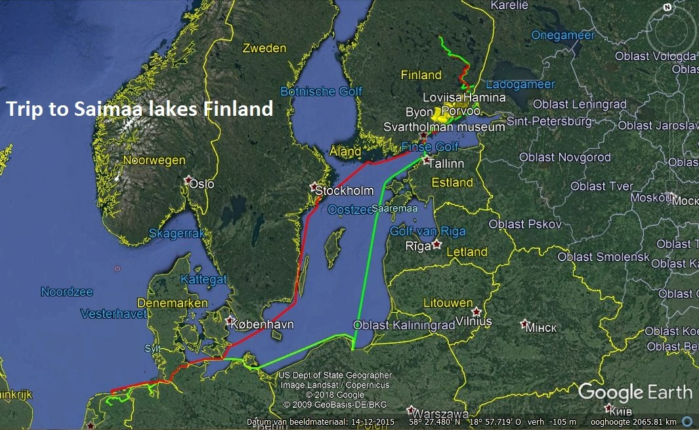
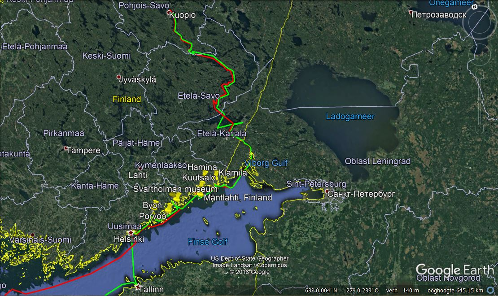
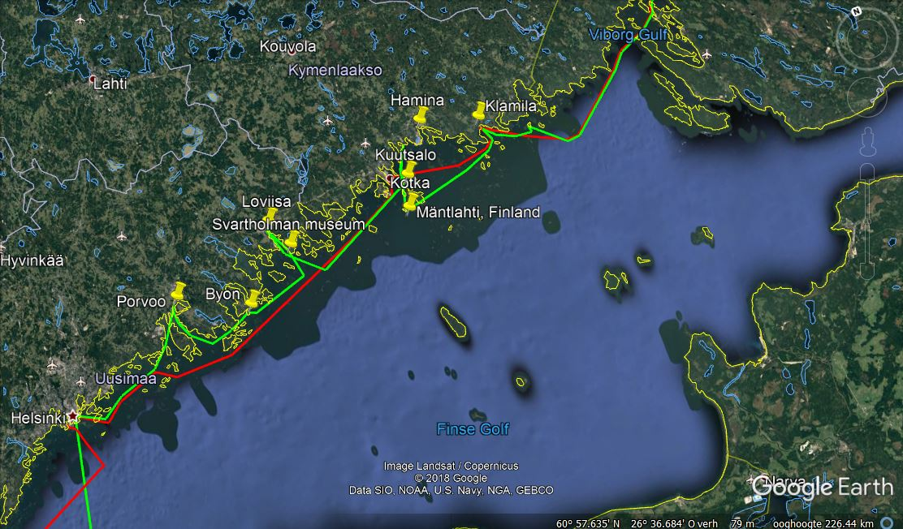

TARKA - A.H.M.Bodewes - Finse Saimaa meren - periode 02/06-12/10.(Gevaren afstand 3.160 nM. Verste punt Kuopio.) |
|
Naar aanleiding van een artikeltje in de Drietand over een tocht van de I.C.C.Y. naar het Finse Savonlinna, het besluit genomen om dit jaar naar Finland te zeilen, deel te nemen aan de aktiviteiten aldaar en daarna enige weken door te brengen op de Finse Saimaa meren. Het lijkt ons namelijk niet echt aantrekkelijk een paar duizend mijl te varen om slechts een paar dagen door te brengen in Savonlinna alleen. |
|  | Ik
vertrek vanuit Drachten om op 6 juni mijn opstapper op te pikken in
Lauwersoog.
Vandaar gaat het via de eenieder bekende weg door het Kieler Kanaal
naar
Klintholm en Kalmar naar Stockholm.Hier bekijken we natuurlijk de Vasa.
Dit
schip heeft, zoals bekend, enige honderden jaren totaal vergeten op de
bodem
van de haven gelegen, nadat het tijdens haar eerste vaart was gezonken.
Men
heeft het schip voor een zeer groot deel in originele toestand boven
water
gehaald,gekonserveerd en in een nieuw museum geplaatst. Een bezoek aan dit museum is zéker de moeite waard. De ligplaats in Helsinki dicht bij het museum, het is reeds door andere Kustzeilers opgemerkt, is buitengewoon onrustig en kostbaar. Zeker rustiger is het lig-plaats te kiezen aan de noordzijde van het eiland bij een andere kleinere jachthaven. Overigens is de vaart door de scherenkust zéér aantrekkelijk. Van Helsinki zeilen we met een mooie lopende wind naar Finland en meren ‘s nachts af te Utö.Daarna genieten we uitgebreid van het varen in de Finse scheren. Een gran-dioos gebied met ontelbare ankerplaatsen en kleine haventjes op de vele eilanden. |
| Het is voor ons als
Nederlanders even wennen aan de gebruikte schaal op de uitstekende Finse
kaarten, doch ik heb nog nimmer een betere betonning gezien dan hier. Ook om
zeer kleine haventjes of ankerplaatsjes in te zeilen zijn er veelal
geleidebakens of lichten. De betonning is kortom zéér uitgebreid en werkelijk
uitstekend te noemen. Wel is het even wennen dat de cardinale tonnen, behalve die
op open zee, niet zijn voorzien van toptekens. Een goede kijker is dus vereist
om de kleuren van de cardinale tonnen tijdig te zien. Wij waren in elk geval
zeer enthousiast over dit gebied. En natuurlijk, een heerlijk rustig gebied.
Overvolle jachthavens kent men hier niet. Het voert te ver om alle havens en
ankerplaatsen te noemen die we hebben bezocht. Geïnteresseerden kunnen te
allen tijde bij mij aan de bel trekken. Op 28 juni lopen we Helsinki
binnen en meren af bij de honderdjarige H.S.K. jachtclub. Gezien het aantal
gereserveerde plaatsen voor de deelnemers heb ik op dat moment nog de ilusie
dat de groep gelukkig niet al te groot is. De HSK ligt op een schiereiland een
paar kilometers van de stad verwijderd. Het voordeel is echter dat men hier heerlijk
rustig ligt, geen last van rondvaartboten of van het autoverkeer.Het openbaar
vervoer in Helsinki is echter uitstekend. Overigens gingen wij veelal op onze vouwfietsjes naar het centrum. Het is een
stad met een mooi centrum met o.a. als bezienswaardigheden de grote
Lutherse kathedraal op een heuvel gebouwd. |
|  |
Woensdag 7 juli vertrekt de hele
vloot door de scherenkust naar het Fins/Russische kanaal waar we middels een
achttal sluizen bijna tachtig meter omhoog worden gesluisd op het niveau van de
meren. Het voormalige éérste, uiteraard veel kleinere kanaal dateerd nog uit de tijd van de Grand Duchy van het Russische keizerrijk. Het werd geopend in 1856 en had toen 28 sluiskolken in de 58 kilometer lange passage. Later werd dit oude kanaal verbreed en nieuwe sluizen gebouwd. In 1963 echter heeft Finland een lease-overeenkomst gesloten met Rusland welke loopt tot 2013. Sindsdien kan men de Finse Saimaameren weer bereiken en bloeit de handel hier weer op. |
| Zoals gebruikelijk in Rusland zijn we, tot aan de eerste
sluis, loodsplichtig als buitenlands schip. In de sluizen ervaren we dan ook
het onaangename van zo’n grote groep deelnemers. Het is voordringen geblazen
met veel onkunde bij diverse deelnemers. De organisatie blijkt niet in staat
het e.e.a. in goede banen te leiden. Hoewel de mensen van de organiserende
vereniging, de HSK, uitermate vriendelijk zijn, is er natuurlijk meer nodig dan
alleen maar vriendelijkheid. En natuurlijk wat goede wil bij de deelnemers.
Verder blijkt er helaas van de goede doelstelling der ICCY :”Verbroedering der
volkeren”, niet veel terecht te komen. Onze oosterburen laten alvast door de
eerstaankomende een komplete kade reserveren voor hun landgenoten. Niet echt
plezierig en vriendelijk.
Lappeenranta bereidt ons als
eerst aan te lopen plaats, een geweldige ontvangst voor op het stadhuis. |
|  |
En
zowaar zien we tijdens ons vertrek uit Imatra het éérste buitenlandse
zeiljacht, een Duitser. Hij was overigens net zo verbaast als wij. Het is een
gebied waar je vrijwel geen buitenlanders tegenkomt, zélfs geen Finnen van
buiten de Saimaa meren ! Ook zie je zeer weinig vrachtverkeer. Een paar
Nederlandse schepen en natuurlijk regelmatig gigantische houtvlotten. Halverwege uitklaren uit Finland, dan het Russische deel van het kanaal, loods aan boord nemen en verderop weer afzetten en daarna, stiekum, ankeren in Russische wateren. Dan langs de kust naar Santio eiland waar we weer inklaren in Finland.Vandaar gaat het in een rustig tempo richting Helsinki. |
|
Op
de kaart zie ik een heel klein baaitje, Mäntlahti, met een paar huisjes erbij getekend. De
boeitjes worden akelig klein en het echolood geeft permanent alarm. Maar we
kunnen Tarka met wat pijn en moeite aan de kop van een miniatuursteigertje
vastmaken. Er liggen alleen maar roeiboten en visbootjes. Na wat plaatselijke
verkenning worden we begroet door een luitenant kolonel die ons met opperste
verbazing verteld dat, hoewel hij daar zijn hele leven al woont, hier nog
nimmer een zeilboot heeft gezien. Eerlijk gezegd verbaasd me dat gezien de
waterdiepte ook niet. Er woont daar zelfs nog een Nederlands echtpaar waar we
kennis mee maken. Verder worden we natuurlijk weer uitgenodigd voor de sauna
etc. Ook nemen we deel aan het jaarlijkse zomerfeest, kompleet met darts
gooien, steltlopen en zingen. Er worden pannekoeken gebakken en worstjes tussen
houtblokken geroosterd, kortom een hele belevenis en een erg gezellige boel. Geplaatst
in jaarboek Ned.Ver.van Kustzeilers 2010.
|